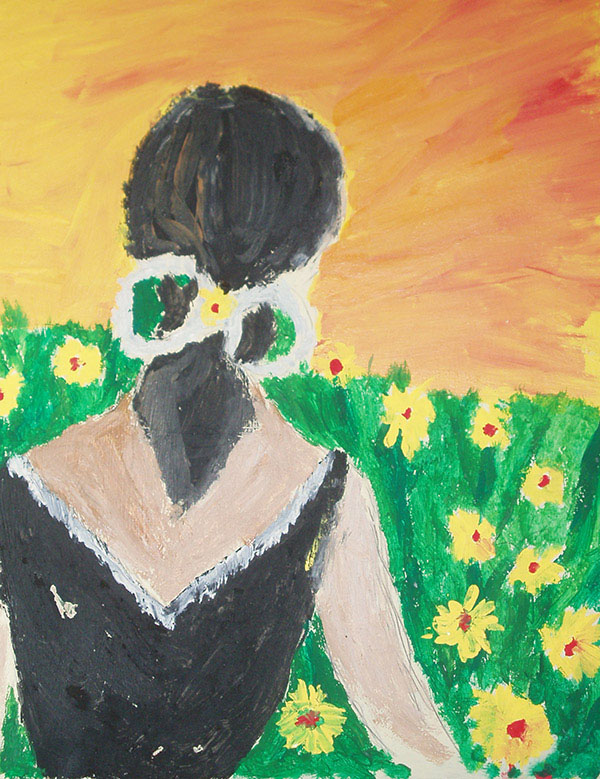

Čím ste chceli byť, keď ste boli malí? Myslím, že zoznam, ktorý by sme sem začali písat by bol riadne dlhý. Prečo to píšem? Pretože medzi nami je veľa takých, ktorý nemohli byť tým, čím chceli alebo chcú. Sú uväznený svojimi vzorcami správania a výchovou alebo okolnosťami ich súčastného života.
Stretol som i ja takého človeka, ktorý potreboval pomôct a požiadal ma o výklad jeho vnútorného obrazu. Obraz bol obrazom ženy, ktorá mala na nohe reťaz. Táto reťaz ju spája s priesvitnou bublinou, v ktorej sa odohrávali výjavy jej života. Moje vysvetlenie bolo
Niesi programátor svojho života ale len pozorovatel. Tvoj život riadia iní. Si uväznená v požiadavkách, ktoré nepatria tebe.
Žena s povzdychom priznala pravdu a začala riešit vztahy, v ktorých žila.
Túto skúsenost hodnotím ako jednu z najsmutnejších, akú som zažil. Týka sa mojej bývalej kolegyne, ktorá zažila tú najhoršiu vec, akú matka môže zažiť. Prežiť vlastné dieťa, ktoré si rozhodlo siahnuť si na život. Začal som s ňou pracovať asi dva roky po tejto smutnej udalosti. Snažila sa to niesť statočne a prijať túto smutnú vlastnú vôľu svojho dietaťa napriek bolesti v srdci. Počas jednej obednajšej prestávky sa zrazu začala silne triasť a plakať. Jemne som sa jej dotkol a opýtal, čo sa deje. Povedala - "Niekedy mám pocit, že cítim v náručí svojho syna a vtedy to strašne bolí." Objal som ju okolo pleca a v tom som zbadal za ňou stáť akýsi biely oblak, ktorý sa snažil s ňou komunikovať.
Pochopil som, že práve dostala navštevu z onoho sveta a tá návšteva jej chce niečo povedať. Neviem dodnes, či som spravil správne alebo nie, ale návšteve som vysvetlil, že svoju matku trápi a spôsobuje jej bolesť. Vysvetlil som mu tiež kam má odísť a že ju má nechať tak.
Návšteva mi potom povedala len toľko, že sa prišla ospravedlniť a matku nechce trápiť. Uznal som mu, že má na to právo ale pri pohľade na moju kolegyňu som si netrúfol robiť tlmočníka a odmietol som spolupracovať poukazujúc na jej psychický stav. Na to sa biely oblak rozplynul a viac som ho nevidel. Krátko na to však odišla z práce aj táto kolegyňa kvôli psychickým problémom. Dúfam, že obaja našli odpustnie.
Tento príbeh sa mi stal po niekoľkých rokoch od získania môjho daru alebo nazvime to tiež schopnosti. Mal som už vytvorený svoj okruch ľudí, s ktorými ma spája záujem o ezoteriku a s ktorými som rád na túto tému diskutoval a filozofoval. Pri jednom takomto stretnutí s kamarátovou ženou sme rozoberali citovú naviazanosť jej syna na jej osobu. Pri pohľade na jej syna mi bol vykreslený obraz malého chlapca pripútaného modrou reťazou ku svahu jedného kopca. Po vykreslení obrazu éterickeho tela dieťaťa matke a otázke, či jej to niečo hovorí som dostal túto odpoveď.
V detstve som mala veľmi dobrého kamaráta, ktorý sa nešťastnou náhodou pri hre obesil na jednom kopci. Vždy si ma chcel zobrať za ženu a dnes to veľmi často pcujem od svojho syna, ktorému pociťujem veľkú blízkosť. Pokiaľ som správne pochopil symboly, želám im veľa dobrých dní, ktoré nestihli pri svojom prvom stretnutí.
Na svojej ceste rozvoja som sa i ja zúčastnil mnohých seminárov zaoberajúcich sa rôznymi technikami. Pri jednom takomto semináry som bol pridelený do dvojice s jednou mladou učiteľkou jógy. Po zoznámení a prvých spoločných cvičebných technikách som začal na tej žene pozorovať zmenu čŕt tváre a farieb vôkol nej. Obraz, ktorý z nej vychádzal bol taký silný, že ma na moment ovládol a vtiahol do seba. Ocitol som sa v lese na konári a vedla mna sedel orol, ktorý mal oči zakryté kožennou čiapkou, ktorú používajú cvičitelia dravých vtákov. Túto čiapku sa pokúšal orol dať dole. Po chvíľkovej márnej snahe prestal, zamával krídlami a pustil sa lietať do voľného priestoru.
Keďže som nemal strach z negatívnej reakcie, tak som sa rozhodol povedať víziu tohto obrazu svojej seminárnej spolužiačke. Na tvári sa jej rozžiaril úsmev a hned prišlo vysvetlenie pre mňa nepochopiteľného obrazu. Mladá žena práve riešila vzťah zo svojím otcom, od ktorého sa práve odsťahovala kvôli večnej kritike a zákazom, ktorými ju častoval na základe svojej predstavy o jej živote. Jej osobnosť dospela do štádia, kedy sa rozhodla nebrať ohľady na to čo s ňou bude a akú prácu bude v živote vykonávat a rozhodla sa žiť podľa vlastných predstáv hľadajúc svoje štastie. Poďakovala mi s radostou v duši a so svetlom v očiach. Obraz jej dal viac ako som si myslel. Držím jej palce, nech sa jej strhnutim šatky podarí nabrať smer.
Poznám viacero ľudí, ktorí sú stále vysmiati, stále niekam behajú a s niekým sa stretávaju. Pri týchto ľudoch si kladiem otázku, či sú aj vo svojej skutočnosti naozaj takí vysmiati, energetickí a spoločenskí. Odpoveď na otázku som začal hľadať po stretnutí s kamarátkou, ktorá niekoľko rokov pracuje v zahraničí. Jej vnútornú spokojnosť som sa rozhodol preskúmatť premietnutím si jej éterického tela.
Obraz, ktorý sa vykreslil z jej vnútra bol obrazom ženy, ktorá sa topila na púšti v piesku, ktorý jej plnil ústa a ona plakala. Nedalo mi to a opýtal som sa kamaratky - “Necítiš sa ty tak trochu sama a opustená?“ Jej prekvapený výraz tváre s otvorenými ústami a potvrdzujúcim tichom bol spečatený slovíčkom “Áno“.
Na každom z nás sa podpíše profesia, ktorú vykonávame. Začneme myslieť podľa vzorca, ktorého uvažujeme v práci aj v súkromnom živote. Tak tomu bolo i pri mojej ceste vlakom, keď moja oproti sediaca spolucestujúca vybrala mobil a s človekom, od ktorého hovor prijala zdieľala spoločné emócie. Z je aury vystúpil najprv ???, ktorý sa zmenil na hada a nakoniec, keď sa so sičaním vypol do výšky nabral podobu útočiaceho medveďa.
Kládol som si otázku, čo asi za ženu sedí oproti mne v kupé vlaku. Odpoveď prišla keď spolusediaca kládla teléfon so slovami, “V poriadku, beriem ten prípad, budem Vás zastupovať na súde“. Uvedomil som si, že som bol svedkom vnútorných pochodov pri vyhodnocovaní a plánovaní budúceho pracovného postupu tejto právničky.
Toto slovo nerád používam vo svojom slovníku, ale žiaľ je častou súčasťou v ľudskom živote. Niektorí majú odvahu a problém si priznajú, iní sa tvária, že im vôbec nič nie je a všetkým tvrdia, že sú úplne v poriadku. Takisto sa tváril aj jeden môj kamarát, ktorého spaľovalo obdobie, v ktorom bol dlhodobo bez vzťahu a cítil sa osamelo. Pri navšteve u neho doma som sa pozrel do jeho vnútra a našiel som tam obraz plačúceho človeka nad fotkou starej lásky s veľkou pijavicou na krku.
Spýtal som sa kamaráta, či už má v sebe vyrovnaný starý vzťah, lebo bez toho nemôže ísť pokojne ďalej. "Nad tým neuvažujem", znela odpoveď. No asi po týždni sa so starou láskou stretol a dôkladne porozprával. Aj keď ho to bolelo, dalo mu to vnútornu slobodu. Pri ďalšom stretnutí z jeho vnútra zmizla totiž pijavica aj fotka starej lásky. Po čase sa mu vrátil ľahký úsmev na tvári, ktorý sa stupňoval až pokiaľ nedošlo k jeho vnútornému mieru.